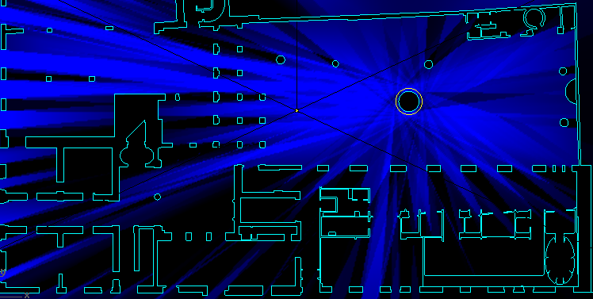
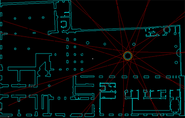
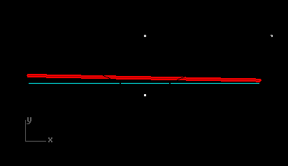
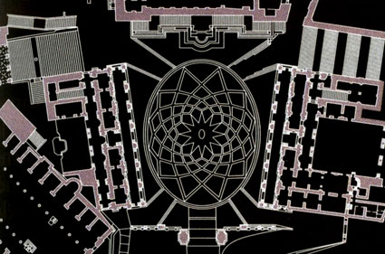

option 0



Grab the slider to change geometry.
For this Italian piazza, the Campidoglio was used as a precedent. The phyllotaxis flooring pattern develops out of geometric relationships to existing structures.

Each object casts a projection derived from the phyllotaxis pattern. Color is a measure of distance. The slider picks one design option developed during the process.